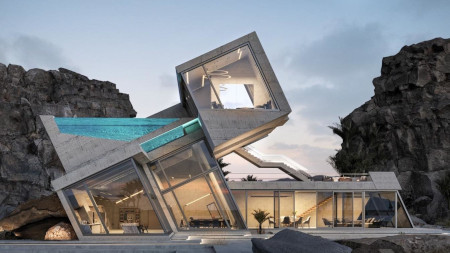

Je me casse la tête à mettre en place des stratégies dans le but de créer un empire industriel dans le fret et minier, par une évolution de la production de ressources sur la planète pour développer vers l'économie spatiale.
Je considère que mon but est louable dans le sens que garantir l'accès à plus de ressources et matières premières permettent de basculer un peu plus vers l'économie de l'abondance après pénurie. L'économie minière n'est qu'à ces débuts car nous creusons pas encore profond(max 4km) et pour l'instant cela n'a pas été automatiser par des robots qui permettront d'aller bien plus en profondeur. De la nécessité de la recherche sur nanites. C'est à dire que créer des Mines cela demande de la planification en amont ou l'on va simuler toute l’extraction. Il faut des calculateurs puissants et des logiciels de modélisation sophistiquer. C'est dans ce domaine que je vais me lancer en tant qu'entrepreneur.
1. Il me faut créer une entreprise de consulting IT qui va travailler sur de futur drones miniers terrestres et spatiaux incluant le fret. Maitriser la modelisation avec la création d'un logiciel libre innovant permettant l'architecture sociale incluant de miners et faire des prévisions, jusqu'à réhabilitation des galeries pour l'urbanisme.
Specialisation:
- Systèmes embarqués Linux
- Logiciel de modelisation
2. Il faudra rapidement gérer les financements par des méthodes modernes de gestion des flux financiers et s'intégrer à l'eco-système DeFi à travers une DAO sur Aragon pour un hedge fund nommé Qasari. Celui-ci permettera d'allouer de l'argent pour des projets, payer des développeurs, générer du profit de l'argent dans le fond pour les investisseurs. Cela sera ouvert à tous grâce au modèle.
3. Un point essentiel sur la formation continue des hackers en créant l'université libreHack en accès sur internet pour accroitre la disponibilité des profils à recruter sans contrainte d'argent pour la formation. Les consultants devant allouer du temps à la formation, l'université prendra le relais pour mettre à jour les compétences. On est une entreprise de pirate, l'information est en libre accès pour la formation et l'éducation.
Avoir une hygiene drastique, il faut beaucoup de discipline et de patience pour élaborer de tels projets, en optique de préparer le changement, je me suis mis à 4 essentiels hobbyes pour réussir. L'échec est envisageable mais la persévérance devra vaincre certaine résistance au changement. Il faut être consistant.
Je vais monter à 15% de mes économies la valeur en cryptomonnaies soit investir 1400€ dans le bitcoin et l'ethereum (ecosystème DeFi et web 3.0)
Je compte approvisionner mon compte de trader de 1000€ dans quelques mois pour espérer en un an générer 170 000€. Le premier million est le plus difficile, mais c'est un passage obligatoire pour apporter des fonds propres à l'entreprise.
4 Hobbyes:
- Pour générer de l'argent: daytrading
- Pour rester créatif: programmation et l'écriture SF
- Pour garder la forme: fitness et trekking
- Pour avoir l'état d'esprit: prière islamique
Patrimoine:
J'espère investir le plus tot possible en devenant propriétaire terrien sur les zones agricoles des mines d'uranium en Bretagne. Implémenter un QG en construisant ma maison pour vérrouiller la zone de prospection minière à Stang entre Guiscriff et Lanvénegen, à l'entrée de la vallée du ruisseau de St-Antoine, dans la pampa. Au lieu d'investir dans plusieurs propriétés médiocre, je préfère patienter pour construire une maison / villa richissime incluant pour marquer les esprits d'un changement d'ère loin des manoirs et chateaux plébiscité par quelques lourdingues. En gros construire plus sophistiqué que le chateau de Trevarez à l'époque de Kerjegu de Scaër:
-
Architecture brutaliste
-
Bibliothèque
- Salle de prière islamique
- Bunker autonome
- Datacenter
C'est un QG pour piloter la prospection minière d'uranium et camper la zone. J'estime à 700m2 en surface, et 800m2 en souterrain bunkerisé. Soit une propriété de 1500 m2, avec bien 2 hectares pour la culture et le jardinage. On reste des agriculteurs, qui viennent de la terre et de la poussière.
